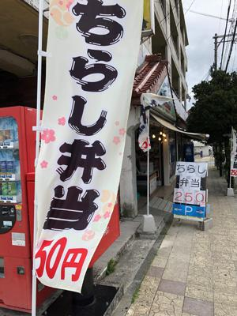

うるがいの話 ある日
最新: 弁当屋さん
うるがいとは 前提知識です
カニの画像をクリックすると『うるがいの話』サイトを表示します
うるがい(ｳﾙｶﾞｲ urugai)とは、『もずくがに』の名前でとても大きくなります。
たながー（ﾀﾅｶﾞｰtanagaa）とは手長えびのことで、何種類かあり大きいのは車 エビぐらいになります。
ぶながー(bunagaa)とは、赤い髪の毛、赤い身体、そして身長は１ｍ２０ｃｍ ぐらい、川の蟹を食べているの目撃された。場所は沖縄県国頭郡大宜味村のと ある村僕の隣近所に住んでいる爺さんから、聞いた話です。
2021年08月03日 (火）
弁当屋さん
18:02

雨が降る予定だが、なかなか降らない。走るかと少し早めの時間に走る、金城
町石田畳のふもとに「ちらし寿司」の上りを上げた弁当屋さんがある。夕方４
時頃でものぼりがある場合が多い、もしかして売れてないのか？と前から気に
なっていた。きょう、勇気を出して弁当が残っているか覗いてみた。ある、多
分、弁当を載せる代は片付けられなく、机の上にはケースがそして中には弁当
らしきものがあった。この前、こどもの国に行った帰りに、２個買って食べた
美味しかった。でも、１２時だったけどお客は私と土方のオッサンが一人だけ
だった。
今日めでたく、ＧｉｔＨｕｂのサイトへの接続方式を変えることができた。パ
スワードだけの運用の期限が８月１３日だから、まだ余裕はあった。前回から
挑戦しているトーン形式を説明するサイトを調べたが、ない！。う、どうしよ
う、で、あっちこっち、みる、そして『ＳＳＨベースの認証を行っている場合
は今回の対象にならない』の文言に気が付く。そして、事態は急激に解決へ向
かう、英語のサイトも見ながら変更を終える。ふと、ＳＳＨ接続は普通に実施
する手順である、たぶん実際に利用している現場では、当たり前なのでネット
にはあまり情報をあげていないかも・・・。